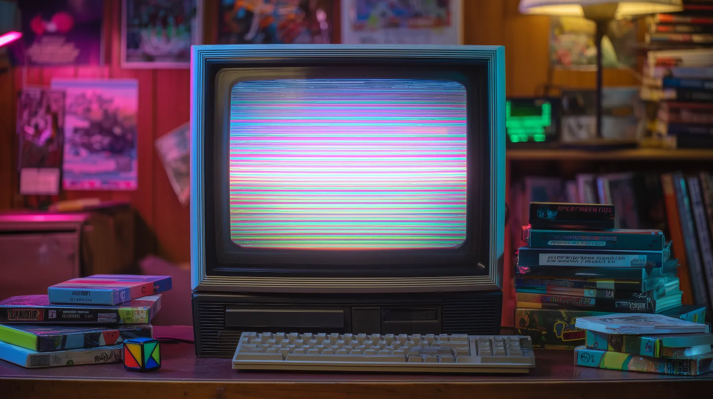
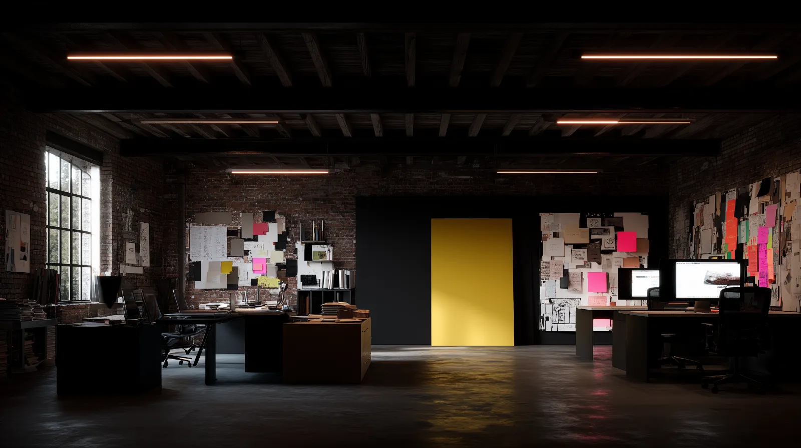
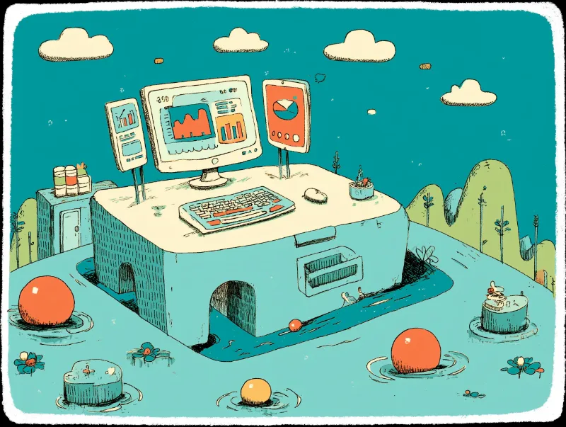

White
& Hollow
Architectural
System.
Uma fusão criativa entre a precisão editorial branca de Digital Architect, o lettering vazado e em mix-blend-difference, feixes cônicos luminosos e a física interativa de Gemini Motion & Onyx UI.


Digital Architect
Mova o cursor para testar a inclinação 3D (rotateX/Y) combinada com iluminação radial .flashlight-card.
48
+ 08


Typography System
Escala tipográfica completa (h1 → h6, body-lg → helper-text), estratégia de carregamento local WOFF2 e tratamentos de lettering transparente.
A. Font Families & Fallback Stacks
03 ACTIVE FAMILIESInter
Neo-grotesque variável projetada para máxima legibilidade em interfaces e títulos arquiteturais com tracking negativo.
Space Grotesk & Instrument Serif
Combinação de display técnico geométrico (Space Grotesk) com acentos editoriais clássicos (Instrument Serif).
JetBrains Mono
Tipografia monoespaçada para metadados, métricas de gráficos SVG, badges de sistema, labels em caixa-alta e código.
B. Font Loading Strategy
Arquivos WOFF2 servidos localmente via css2_19fd9cc6b396.css e css2_604c95cc5779.css para zero latência de rede e funcionamento offline.
font-display: swap + Unicode Range
Subsetting por blocos Unicode (U+0000-00FF Latin, Latin-Ext) evitando bloqueio de renderização (FOIT) e garantindo texto visível imediato.
Laboratório de Lettering Transparente & Cinético
color: transparent; -webkit-text-stroke: 1.5px rgba(28,28,28,0.35); (Hover p/ ativar)
Inversão óptica em tempo real sobre fotografia arquitetural.
Animação vertical textSlide letra por letra com curva 0.16, 1, 0.3, 1.
Digital Architect
Design & Motion Strategy
Architectural Case Studies
Interactive Component Containers
Micro-interactions & Haptic Latency Reduction
CORE COMPETENCIES & SYSTEM SPECIFICATIONS
Thoughts on the intersection of design, technology, and human psychology. Exploring how we can build better tools for thought with tactile precision.
A unified design language balancing aesthetic sensibility with functional clarity. Built on a 12-column grid with crisp 1px structural borders.
Redesigning the investment flow and creating a unified component library for multi-tenant analytics dashboards.
Colors & Surfaces
Arquitetura monocromática branca e pedra (#FFFFFF → #1C1C1C) combinada com acentos cinéticos de alta visibilidade (#FF3300, #CCFF00). Clique em qualquer card para copiar o HEX.
Pure Architectural White
Superfície principal luminosa, fundo de cards ativos, modais e estados hover de destaque.
Warm Alabaster 100
Fundo secundário para alternância sutil de dobras, cabeçalhos de tabela e painéis técnicos.
Architectural Stone
Tom assinatura de digital-architect. Cria contraste imediato com cards #FFFFFF.
Obsidian Ink 900
Cor primária para tipografia, botões principais, bordas de foco ativo e rodapé de alto contraste.
Stone 300 Hairline
Divisórias arquiteturais de 1px, guias de 12 colunas, bordas de inputs em repouso e estados desabilitados.
Stone 500 Metadata
Subtítulos, labels técnicos monoespaçados, legendas de gráficos e ícones secundários em repouso.
Kinetic Vermilion
Herdado de AXIS & KINETIC. Usado em indicadores ao vivo, séries de gráficos, foco e feixes cônicos.
Onyx Acid & Status
Tokens semânticos de validação, badges de versão, estados de conclusão de download e alertas de sistema.
A. Opacity Variants & Alpha Masks
B. Gradient Participation
C. Contextual Usage Rules & WCAG Contrast
6 STATES MATRIX| Context / State | Token Assignment | Visual Rule | Contrast |
|---|---|---|---|
| Text (Primary / Muted) | #1C1C1C / #78716C | Títulos e corpo em #1C1C1C; metadados em #78716C | AAA 17.4:1 |
| Background (Layered) | #FFFFFF / #F5F5F0 / #EAEAE5 | Alternância entre branco puro e pedra arquitetural | AAA Base |
| Border (Rest → Focus) | #D6D3D1 → #1C1C1C | Linhas contínuas de 1px; escurece para #1C1C1C no hover | Structural |
| Hover State | bg-white + radial glow 7% | Elevação -2px, feixe shimmer ou inversão #1C1C1C | AAA 17.4:1 |
| Active / Selected | #1C1C1C + #FF3300 ring | Preenchimento sólido ou indicador vermilion ativo | AA+ Verified |
| Disabled State | bg-[#F5F5F0] text-[#A8A29E] | Opacidade 45%, cursor-not-allowed, sem sombra | Muted 2.4:1 |
Interactive Components
Especificação completa e demonstração interativa ao vivo para Buttons, Inputs, Cards, Navbars, Sections, Modals, Badges e Tooltips utilizando as classes originais dos templates.
Buttons & Kinetic Triggers
Button Component Spec
- HEIGHT / PADDING:44px–48px / 14px 28px
- RADIUS TOKENS:2px (Sharp) / 9999px (Pill)
- TYPOGRAPHY:12px Mono Uppercase 0.18em
- HOVER PHYSICS:translateY(-3px) + Shimmer
- BEAM GRADIENT:conic-gradient(spin 2s)
- DISABLED STATE:opacity: 0.4; pointer-events: none
Inputs, Mechanical Toggles & Drop Zones
Input & Control Spec
- REST BORDER:1px solid #D6D3D1
- FOCUS RING:1px solid #1C1C1C / #FF3300
- SURFACE REST:#FAF9F6 → #FFFFFF (Focus)
- CHECKBOX EASE:scale(0 → 1) 200ms elastic
- ERROR FEEDBACK:border-[#ff453a] + shake 0.5s
:focus-within e peer-checked sem dependência de JS pesado.
Cards — Editorial Case Study, Flashlight & Corner Frame
Nova Finance
Card editorial em 12 colunas: no hover, a superfície transita de #EAEAE5 para #FFFFFF, o título desloca +8px e a fotografia ganha cor e escala 1.05x.
Light Radial Flashlight
Rastreia --mouse-x e --mouse-y via JS projetando um gradiente radial suave de 550px sobre a superfície branca.
Corner-Bracket Container
Cantoneiras vetoriais SVG de precisão técnica herdadas do sistema ONYX UI para destacar módulos de arquitetura.
Obsidian Contrast Card
Variante escura de alto contraste para módulos de telemetria, mantendo o efeito de lanterna radial luminosa no cursor.
Navbars, Breadcrumbs & Progress Steppers
Sections, 12-Col Grid, SVG Patterns & Dividers
Modals & Dialogs
Modal arquitetural com backdrop-blur-md, borda de 1px em #1C1C1C e entrada elástica cubic-bezier(0.16, 1, 0.3, 1).
Badges & Ribbons
Tooltips &Alerts
Latency Threshold Spec
Transition easing: var(--ease-elastic)
Iconography System
Combina a família solar:* (Linear & Bold-Duotone) de digital-architect e design_system4 com o Sprite SVG de alta densidade (.icon-card / .icon-base) de animations-gemini2.
A. Solar Iconify Primitives (Linear & Duotone)
12 CORE GLYPHSB. SaaS SVG Sprite Sheet (.icon-card & .icon-base)
Grade de 24px com traço de 1.75px e animação de escala + cor #FF3300 no hover.
Motion & Animation
A. Scroll Reveal Choreography (.reveal + .text-reveal-wrapper)
cubic-bezier(0.16, 1, 0.3, 1)Immediate Scroll Reveal
translateY(2rem → 0) • opacity(0 → 1) • 1.0s
Staggered Harmonic Reveal
transition-delay: 0.2s • IntersectionObserver
Deep Cascade Reveal
transition-delay: 0.5s • Smooth settle
B. Kinetic SVG Loading States & Micro-Interactions
10 estados de carregamento e interações táteis em SVG puro adaptados para a superfície clara.